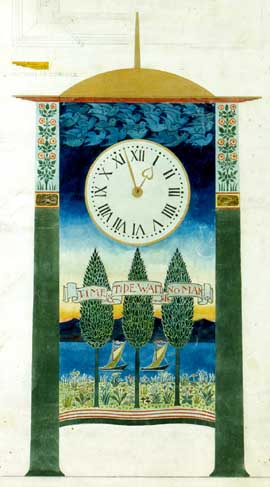

The Arts and Crafts movement began in late nineteenth century Britain and had roots in the revival of medieval and Gothic architectural styles. Leading figures in the early development of the movement were men from wealthy families, well educated either at Oxford or Cambridge University. Almost all of them were practicing architects or, like William Morris, trained in architecture.
In the nineteenth century the taste in design for buildings moved away from Classical styles. These styles were based on design patterns which were formulated and expressed in ancient Greece and Rome, and included certain rules of proportion and a limited stock of shapes such as the 'orders' of columns. Classical elements of this kind had been used in a variety of ways - from the unconstrained Baroque style to disciplined Palladianism, but in one form or another they had dominated the design of large state buildings, churches, and country houses, for two hundred years.
In the place of classical styles the new architectural styles of, first, Gothic Revival, and then Arts and Crafts emerged. Gothic style is easily recognised by pointed arches and high pitched roofs, with structural support being provided by webbed vaulting and butresses, rather than the strength of walls. The Houses of Parliament in London (main buildings opened in 1852) is a an example of a Gothic revival building, although purists in the Gothic Revival movement would complained that its symmetries and repetitive patterning make it a debased example.
Proponents of the Gothic style placed great emphasis on individual skill and craftsmanship in construction. There was also an emphasis on a very practical approach to design in which usefulness and comfort of the building for the occupants was an important design goal.
Arts and Crafts architecture followed these principles, allowing the function of the building and the activities within it to determine the outer shape and the construction, leaving out excessive ornamental features. One departure from Gothic style was that Arts and Crafts buildings tended to have graceful curved arches rather than pointed and many were designed on a modest scale, in styles reminiscent of the manorial halls and half timbered cottages of Tudor or Elizabethan England. The preference for local slate, and red brick, for English Oak and for the cosy Inglenook fireplace rather than ornate lead roofs and carved marble chimney piece defined the Arts and Crafts style.
There was also a contrast in values between classical architecture and Arts and Crafts. Classical architecture was seen as being built by slave labour or, in more recent times, by wage slaves, whereas Arts and Crafts relied on a partnership between designer and craftsman in which the craftsman was highly respected alongside the artist and architect . There was too a greater concern for equality, and a concern to improve the quality of life which a building could provide for its occupants. Charles Voysey for example took great care in the design of servants accommodation in his houses to ensure they had good light and space, believing that it would shame any man to have his servants in poor accommodation.
The important contribution of architects such as Pugin and Voysey stems from their involvement in the design of furnishing and decoration. They continued their interest after the building structure was complete, and followed through into interior design and decorative art. This interest beyond the architectural started early in the history of the movement when architects were unable to find the right kind of furniture to match the new style of buildings which they had designed. Neither the furniture available from manufacturers at the time, nor the antique furniture which could be acquired fitted in with the new styles and so architects designed furniture and fittings to match the buildings and interiors which they had created.

These architect-designers left their personal touch on the smallest detail of the design inside and outside of the building. As well as including designs for furniture ,they often designed the light fittings, wallpaper, door furniture, and even keys, window latches ,doorbells and clocks. See for example the design for a clock by Charles Voysey which is shown opposite (with kind permission of the Royal Institute of British Architects).
In the early history of the Arts and Crafts movement, William Morris is perhaps the best known architect designer and later Hugh Mackay Baillie Scott and Charles Voysey were prominent. However if there were any single figure to be credited as the father of the movement, the name of Augustus Welby Northmore Pugin would undoubtedly spring to the minds of most art historians. See Pugin and the Gothic Revival